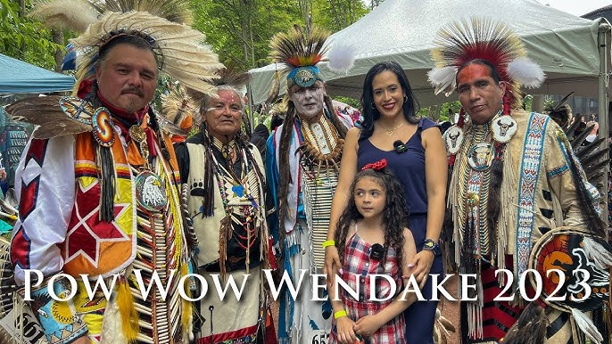

La voix des ancêtres résonne encore

La musique occupe une place centrale dans la vie des Premières Nations. Elle accompagne les cérémonies, marque les saisons, guérit les malades et célèbre la vie. Plus qu'un art, c'est un langage spirituel, un pont entre les mondes visible et invisible.
Le tambour est considéré comme sacré dans la plupart des cultures autochtones. On dit qu'il représente le battement du cœur de la Terre-Mère. Les chants accompagnés du tambour (drum songs) structurent les pow-wows, les cérémonies de guérison et les rassemblements communautaires. Chaque nation possède ses rythmes, ses mélodies et ses traditions de chant.
La flûte de cèdre est un instrument solitaire, souvent joué pour la cour ou la méditation. Légende veut que le son de la flûte soit né quand un jeune homme, épris d'une jeune femme, a été guidé par un hibou pour fabriquer l'instrument afin de séduire celle qu'il aimait. Aujourd'hui encore, les flûtes de cèdre évoquent la nature, l'amour et la tranquillité.
Chez les Métis, le violon (fiddle) est roi. Hérité des traditions écossaises et irlandaises, il a été adapté au style des danses des Plaines. La musique au violon métis est vive, rythmée, parfaite pour la gigue — une danse percussive où les danseurs frappent le sol avec leurs pieds en rythme avec la musique.
Le pow-wow contemporain a développé son propre répertoire musical. Les chants de style "Northern" et "Southern" se distinguent par leurs tessitures et leurs rythmes. Les chanteurs forment des groupes (drum groups) qui voyagent de pow-wow en pow-wow, préservant et innovant ces traditions vocales.
Des artistes comme Buffy Sainte-Marie, Robbie Robertson, ou plus récemment des groupes comme A Tribe Called Red (maintenant The Halluci Nation) ont porté la musique autochtone vers de nouveaux horizons, mélangeant traditions ancestrales et sons contemporains. Le hip-hop autochtone explose, portant les revendications des jeunes générations sur des rythmes modernes.
Qu'elle soit traditionnelle ou contemporaine, la musique autochtone reste une force vitale de culture et d'identité.
Article rédigé avec respect pour les traditions autochtones et la mémoire des ancêtres.